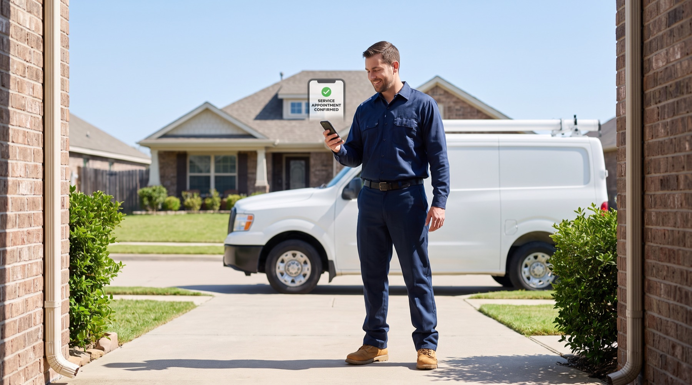

No sales calls needed
Sign up and connect your calendar yourself. No demo, no waiting on a salesperson to call you back.
Works alongside the tools you already use, even if that's just a phone and a paper calendar.
Sign up and connect your calendar yourself. No demo, no waiting on a salesperson to call you back.
Some tools only send a text back — that still loses the job. MyWorkFlo actually books the appointment.
Gas smell, flooding, sparks, burning smell — anything dangerous gets sent straight to a person, fast.
Every plan answers callers in both languages. It's not an expensive add-on for later.
You already have scheduling and invoicing software. MyWorkFlo solves one specific problem: the customer who calls while you're driving, a tech is on a roof, or the office is closed for the night.
Try it today. No hour-long onboarding call required.
Real booking included from the cheapest plan, not locked behind something bigger.
One extra job you would've otherwise missed usually covers the cost.
Callers can speak either one. Your team still sees everything in one place.
Connect your phone, texts, calendar, service area, and emergency words yourself. No demo required.
Understands real problems like no cooling, no heat, tune-ups, and replacements. Not generic small talk.
If something's urgent or unclear, it stops and gets a real person on the phone.
No cooling, no heat, tune-ups, emergencies — MyWorkFlo already knows what these mean, the same way your team does.
The second a call is missed, MyWorkFlo sends a text so the customer doesn't hang up and call someone else.
Answers calls at night and on weekends, gets the details, and sends real emergencies to a person.
Listens for words like gas, flooding, sparks, or burning smell — and stops to get a real person involved.
Books an open time slot when the job, location, language, and availability all line up.
Checks back in on estimates automatically so they don't go cold and get forgotten.
Talks to callers in English or Spanish, then gives your office a plain-English summary of the job.
Free Missed Call & Booking Audit
Answer three quick questions about your call volume and job size. We'll show you the real numbers, and whether the $119 plan would pay for itself.
Tell it your service area, hours, appointment types, and which words mean "this is an emergency."
Responds to missed and after-hours calls, listens for urgent language, and loops in a person when it matters.
Books the appointment and sends a confirmation, or flags it for your office if a person needs to decide.

MyWorkFlo only speeds up the first step: answering fast and booking what it's allowed to. Everything else goes to your team, with the details already filled in.
MyWorkFlo writes the reply, but your staff approves every message before it's sent — except real safety emergencies, which send our pre-approved safety script instantly and notify you right away.
MyWorkFlo can text back and check the details itself, but booking, dispatch, and pricing still wait for your OK.
Approved appointment types get booked automatically once the rules, schedule, and service area all match.
For solo operators who need missed-call recovery and real calendar booking.
For 2 to 10 tech businesses that need after-hours coverage and office approval controls.
For multi-tech teams with more numbers, locations, routing rules, and integrations.
Home service calls can be urgent. MyWorkFlo knows its limits: it won't guess at repairs, make up arrival times, or quote a price it isn't sure about. And it hands off fast the moment something sounds dangerous.
Gas smell, flooding, sparks, burning smell, an angry caller, or anything unclear gets sent to your team.
You control what it says about pricing, follow-up timing, and opting out of texts. Emergency safety scripts are locked and pre-approved, so they're never watered down.
Every call, text, decision, and booking is saved so you can review it any time.
No website yet? No problem. Leads can still come in by text, email, or a simple spreadsheet.